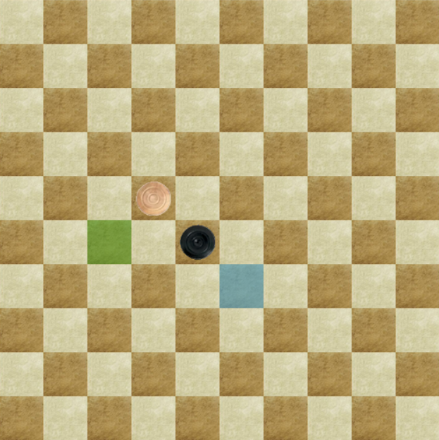

Règles du Jeu de Dames International
Le matériel
Disposition initiale
Le jeu de dames international se joue sur un damier carré divisé en 100 cases égales, alternativement claires et foncées.
Le jeu se joue sur les cases foncées du damier. Il y a donc 50 cases actives. La plus longue diagonale, joignant deux coins du damier et comprenant 10 cases foncées, se dénomme la grande diagonale.
Le damier doit être placé de sorte que la première case de gauche, pour chaque joueur, soit une case foncée.
Le jeu de dames international se joue avec 20 pions blancs (clairs) et 20 pions noirs (foncés). Avant de débuter une partie, les 20 pions noirs et les 20 pions blancs sont disposés sur les 4 premières rangées de chaque joueur.
La marche des pièces
le déplacement des pions
Un pion se déplace obligatoirement vers l’avant, en diagonale, d’une case sur une case libre de la rangée suivante
Lorsqu'il atteint la dernière rangée, le pion devient dame. Pour cela, on couronne le pion en plaçant dessus un deuxième pion de la même couleur.
le déplacement des dames
Une dame doit attendre que l’adversaire ait joué au moins une fois avant d’entrer en action.
Une dame se déplace en arrière ou en avant sur les cases libres successives de la diagonale qu’elle occupe.
Elle peut donc se poser, au-delà de cases libres, sur une case libre éloignée.
La prise

Prise par un pion
La prise des pièces adverse est obligatoire et s’effectue aussi bien en avant qu’en arrière.
Lorsqu’un pion se trouve en présence, diagonalement, d’une pièce adverse derrière laquelle se trouve une case libre, il doit obligatoirement sauter par-dessus cette pièce et occuper la case libre.
Cette pièce adverse est alors enlevée du damier.
Cette opération complète est la prise par un pion.
Prise par une dame
Lorsqu’une dame se trouve en présence sur la même diagonale, directement ou à distance, d’une pièce adverse derrière laquelle se trouvent une ou plusieurs cases libres, elle doit obligatoirement passer par-dessus cette pièce et occuper, au choix, une des cases libres. Cette pièce est alors enlevée du damier.
Cette opération complète est la prise par une dame.
Rafle par un pion
Lorsqu’au cours d’une prise par un pion, celui-ci se trouve à nouveau en présence, diagonalement, d’une pièce adverse derrière laquelle se trouve une case libre, il doit obligatoirement sauter par-dessus cette seconde pièce, voire d’une troisième et ainsi de suite, et occuper la case libre se trouvant derrière la dernière pièce capturée. Les pièces adverses ainsi capturées sont ensuite enlevées du damier dans l’ordre de la prise.
Cette opération complète est une rafle par un pion.
Rafle par une dame
Lorsqu’au cours d’une prise par une dame, celle-ci se trouve à nouveau en présence, sur une même diagonale, d’une pièce adverse derrière laquelle se trouve une ou plusieurs cases libres, elle doit obligatoirement sauter par-dessus cette seconde pièce, voire d’une troisième et ainsi de suite, et occuper au choix une case libre se trouvant derrière et sur la même diagonale que la dernière pièce capturée. Les pièces adverses ainsi capturées sont ensuite enlevées du damier dans l’ordre de la prise.
Cette opération complète est une rafle par une dame.
Le résultat
La victoire
La victoire est obtenu par un joueur lorsque son adversaire:
* Abandonne la partie
* Se trouve dans l’impossibilité de jouer
* N’a plus de pièces
L’égalité, dénommée aussi remise ou nulle, est obtenue pour chacun des adversaires :
* Qui la déclare, de commun accord
* Lorsqu’aucun des deux ne parvient au gain